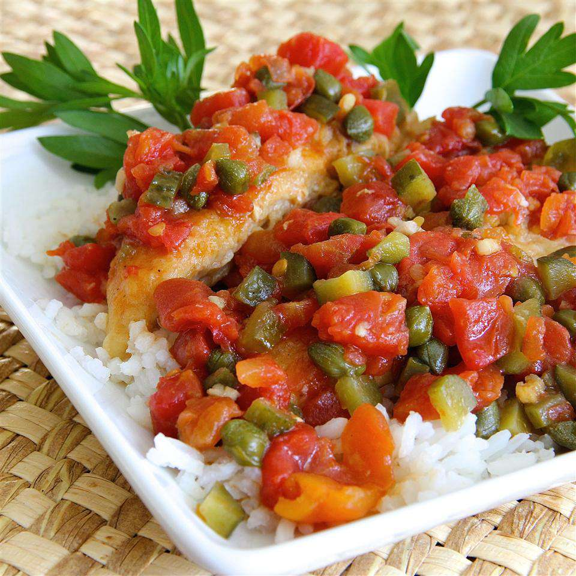

Chicken Piquant

Description
This recipe is a variation on traditional chicken piquant which is spicy Cajun chicken.
This comes together quickly and is good served over white rice.
Ingredients
- ½ cup all-purpose flour
- ½ teaspoon Creole seasoning (such as Tony Chachere's®)
- 1 (16 ounce) package boneless, skinless chicken breast tenders
- 1 tablespoon olive oil
- 1 (10 ounce) can diced tomatoes with green chile peppers (such as RO*TEL®)
- ¼ cup diced sweet pickles
- 2 tablespoons red wine vinegar
- 2 tablespoons drained capers
- 2 garlic cloves, crushed
Steps
- Mix flour and Creole seasoning together in a shallow bowl. Dredge chicken through the flour mixture, shaking off excess.
- Heat oil in a skillet over medium-heat.
Cook chicken in the hot oil until browned, about 2 minutes per side.
Add diced tomatoes with green chile peppers, pickles, vinegar, capers, and garlic to chicken;
simmer until chicken is no longer pink in the center, about 10 minutes more.
Disclaimer
This Chicken Piquant recipe and steps were copied from All Recipes,
and is only being used for development learning purposes for The Odin Project's HTML recipe project, and in no way for monetary benefit.